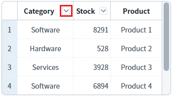
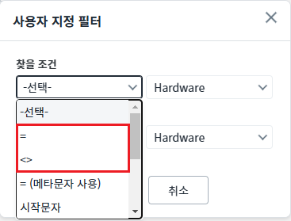
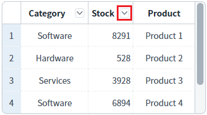
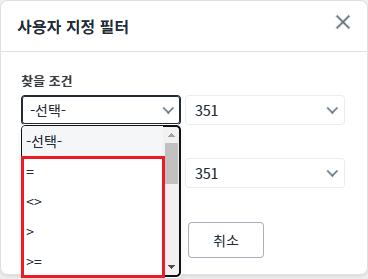
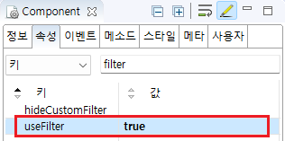

GridView에 필터 기능을 적용했을 때, 문자형 데이터와 숫자형 데이터에 설정할 수 있는 비교 연산자의 차이를 확인할 수 있는 예제입니다. 컬럼의 데이터가 숫자형으로 이루어진 경우 (>, >=, <, <=)가 추가됩니다. 이 기능은 필터 기능이 적용된 경우 별도의 설정없이 적용됩니다.
필터 기능 적용
'Category' 컬럼과 'Stock' 컬럼의 필터 기능의 비교 연산자를 비교합니다.
1
STEP 1: 헤더 컬럼 'Category'에 구성된 필터 아이콘을 클릭합니다.
Image 1.브라우저(Chrome) 실행 예시

2
SETP 2: 비교 연산자 확인하기
팝업 '사용자 지정 필터'에서 '찾을 조건'의 콤보 박스를 확장합니다.
Image 2.브라우저(Chrome) 실행 예시

1
STEP 1: 헤더 컬럼 'Stock'에 구성된 필터 아이콘을 클릭합니다.
Image 3.브라우저(Chrome) 실행 예시

2
SETP2. 비교 연산자 확인하기
팝업 '사용자 지정 필터'에서 '찾을 조건'의 콤보 박스를 확장합니다.
숫자형 비교 연산자인 ">", ">=", "<", "<=" 가 추가된 것을 확인합니다.
Image 4.브라우저(Chrome) 실행 예시

GridView 헤더 컬럼의 속성을 정의합니다.
[필수] useFilter="true"
[default:false, true] 필터 사용 여부.
Image 5.웹스퀘어 스튜디오의 Component View - 속성 설정 예시

Example 1.Source
<!-- gridView 의 소스 본문 예시 --> <w2:gridView dataList="data:dlt_exam" > <w2:header id="header1"> <w2:row id="row1"> <w2:column useFilter="true" value="Category"> </w2:column> <w2:column useFilter="true" value="Stock"> </w2:column> <!-- 중략 --> </w2:row> </w2:header> <!-- 중략 --> </w2:gridView>
[header column] useFilter
useFilterList